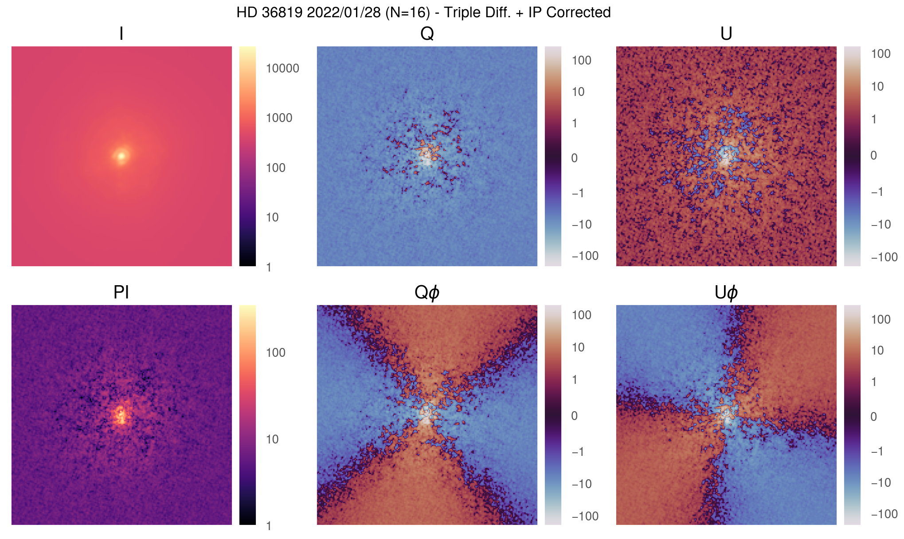

Polarimetric Differential Imaging (PDI)
Contents
Polarimetric Differential Imaging (PDI)#
This notebook shows a full example of PDI using some coronagraphic data taken in February 2022 of AB Aurigae. This notebook can be downloaded as polarimetric_differential_imaging.ipynb.
Setup and Imports#
from pathlib import Path
import vampires_dpp.mueller_matrices as mm
from astropy.io import fits
from zenodo_get import zenodo_get
import proplot as pro
import numpy as np
datadir = Path("data/hd36819_20220128/")
pro.rc["style"] = "ggplot"
pro.rc["image.origin"] = "lower"
pro.rc["image.cmap"] = "magma"
# download example data
zenodo_get(["10.5281/zenodo.7359198", "-o", datadir.parent.absolute()])
Pipeline processing#
Warning
This data needs to be deinterleaved because it is directly from the VAMPIRES computer and not the STARS archive. In general, you should leave deinterleave at its default value false.
We will use the pipeline to process our data, making sure to set the [polarimetry] section. The below is the configuration file used for the pipeline-
hd36819_20220128_config.toml
version = "0.2.0" # vampires_dpp version
name = "hd36819_20220128"
target = "HD 36819"
directory = "data/hd36819_20220128"
output_directory = "data/hd36819_20220128/processed"
filenames = "HD36819*.fits"
frame_centers = [[119, 139], [124, 139]] # cam 1, cam 2 centers (x, y)
[calibration]
output_directory = "calibrated"
deinterleave = true # note, this is only because this is non-STARS data
[frame_selection]
q = 0.5
[registration]
method = "peak"
output_directory = "registered"
[collapsing]
output_directory = "collapsed"
[derotate]
output_directory = "derotated"
[polarimetry]
method = "triplediff"
[polarimetry.ip]
radius = 3 # radius of circular aperture
from vampires_dpp.pipeline import Pipeline
pipeline = Pipeline.from_file(datadir / "hd36819_20220128_config.toml")
pipeline.run()
---------------------------------------------------------------------------
FileNotFoundError Traceback (most recent call last)
Cell In[3], line 3
1 from vampires_dpp.pipeline import Pipeline
----> 3 pipeline = Pipeline.from_file(datadir / "hd36819_20220128_config.toml")
4 pipeline.run()
File /opt/hostedtoolcache/Python/3.9.15/x64/lib/python3.9/site-packages/vampires_dpp/pipeline.py:111, in Pipeline.from_file(cls, filename)
92 @classmethod
93 def from_file(cls, filename: PathLike):
94 """
95 Load configuration from TOML file
96
(...)
109 >>> Pipeline.from_file("config.toml")
110 """
--> 111 config = toml.load(filename)
112 return cls(config)
File /opt/hostedtoolcache/Python/3.9.15/x64/lib/python3.9/site-packages/toml/decoder.py:133, in load(f, _dict, decoder)
114 """Parses named file or files as toml and returns a dictionary
115
116 Args:
(...)
129 (Python 2 / Python 3) file paths is passed
130 """
132 if _ispath(f):
--> 133 with io.open(_getpath(f), encoding='utf-8') as ffile:
134 return loads(ffile.read(), _dict, decoder)
135 elif isinstance(f, list):
FileNotFoundError: [Errno 2] No such file or directory: 'data/hd36819_20220128/hd36819_20220128_config.toml'
Reviewing Outputs#
stokes_cube = fits.getdata(datadir / "processed" / "hd36819_20220128_stokes_cube_ip.fits")
from our Stokes cube we can calculate the polarized intensity (PI), angle of linear polarization (AoLP), and the radial Stokes parameters \(Q_\phi\), \(U_\phi\).
from vampires_dpp.polarization import radial_stokes
stokes_PI = np.hypot(stokes_cube[2], stokes_cube[1])
stokes_AoLP = np.arctan2(stokes_cube[2], stokes_cube[1])
Qphi, Uphi = radial_stokes(stokes_cube, phi=0)
let’s plot our outputs (code hidden for brevity)
